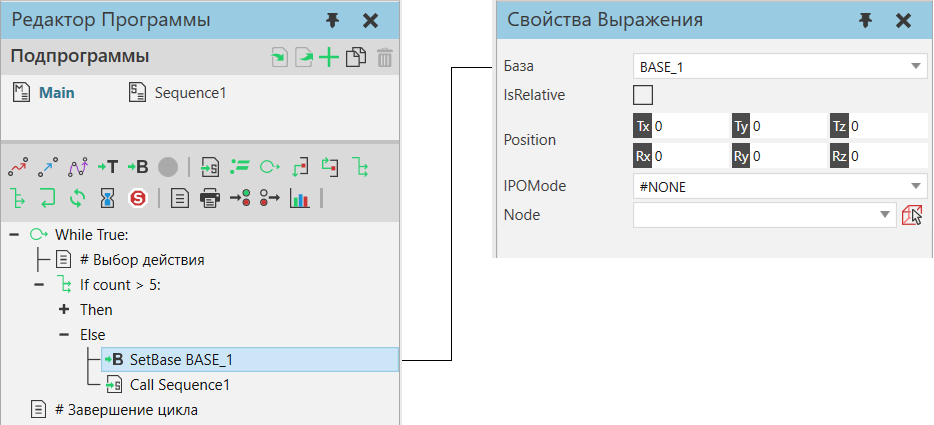

|
Оператор Определить базу изменяет свойства системы координат базы робота во время симуляции. Когда вы сбрасываете симуляцию, система координат базы возвращается в исходное положение.

Примечание: Систему координат базы можно использовать в качестве базовой системы координат для операторов движения. Перемещение баз также приведет к перемещению любых операторов движения, ссылающихся на эту базу. Как правило, оператор Определить базу используется в программах для роботов, включающих укладку и разборку деталей.
Свойства
Название
|
Описание
|
База
|
Определяет базу контроллера робота, измененную оператором.
Примечание: Вы не можете использовать оператор Определить базу для изменения базы в другом роботе.
|
IsRelative
|
Определяет, основана ли позиция на системе координат базы или на родительской системе координат.
True использует базовую систему координат, поэтому база будет перемещена относительно своего местоположения во время выполнения оператора.
False использует относительную систему координат для базы, определенную в узле, поэтому база будет перемещена в абсолютное местоположение.
|
Position
|
Определяет положение и ориентацию Base.
|
IPOMode
|
Определяет режим интерполяции рамки и внешнюю конфигурацию контроллера базы робота.
#NONE не имеет никакого эффекта и является настройкой по умолчанию.
#BASE устанавливает базу в качестве базовой системы координат.
#TCP устанавливает базу в качестве центральной точки инструмента.
Примечание: Конфликт может возникнуть, если пара «база-инструмент» в ссылающемся роботе имеет одинаковое значение свойства IPOMode или не может использоваться с текущей конфигурацией робота.
|
Node
|
Определяет узел, к которому прикреплена база в 3D-мире.
Примечание: Если нет, база прикрепляется к рамке мира роботов.
|
|